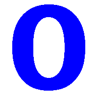

Pozycyjne systemy liczbowe
| Hex |
Bin |
Dec |
| A |
1010 |
10 |
| B |
1011 |
11 |
| C |
1100 |
12 |
| D |
1101 |
13 |
| E |
1110 |
14 |
| F |
1111 |
15 |
Słowniczek
Binarny
pozycyjny system liczbowy, w którym podstawą jest liczba 2, a do zapisu liczb potrzebne są tylko dwie cyfry: 0 i 1.
Decymalny
pozycyjny system liczbowy, w którym podstawą jest liczba 10; do zapisu liczb stosuje się 10 cyfr: 0, 1, 2, 3, 4, 5, 6, 7, 8, 9.
Heksadecymalny
pozycyjny system liczbowy, w którym podstawą jest liczba 16. Do zapisu liczb w tym systemie potrzebne jest szesnaście znaków.